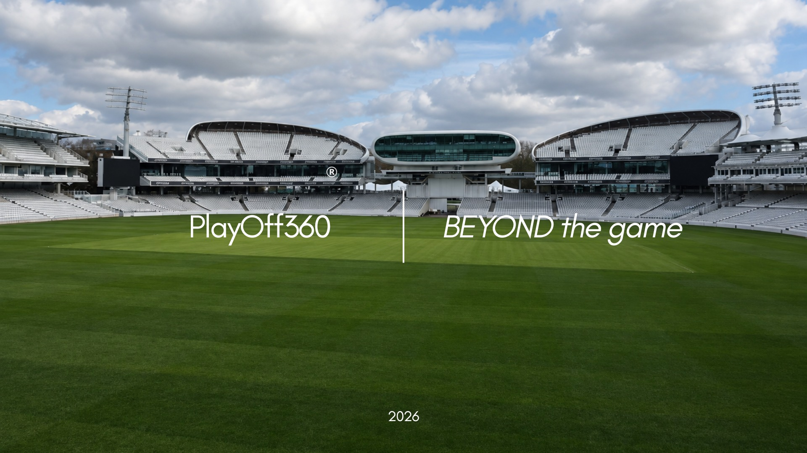
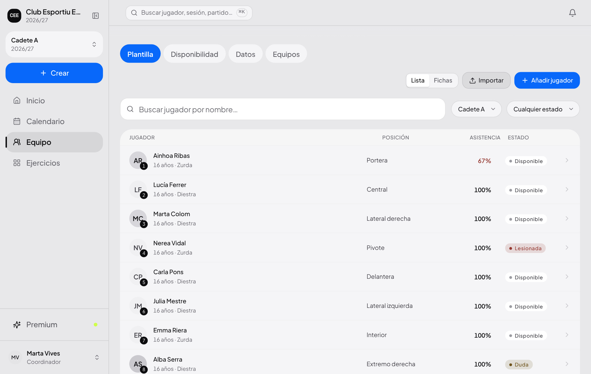
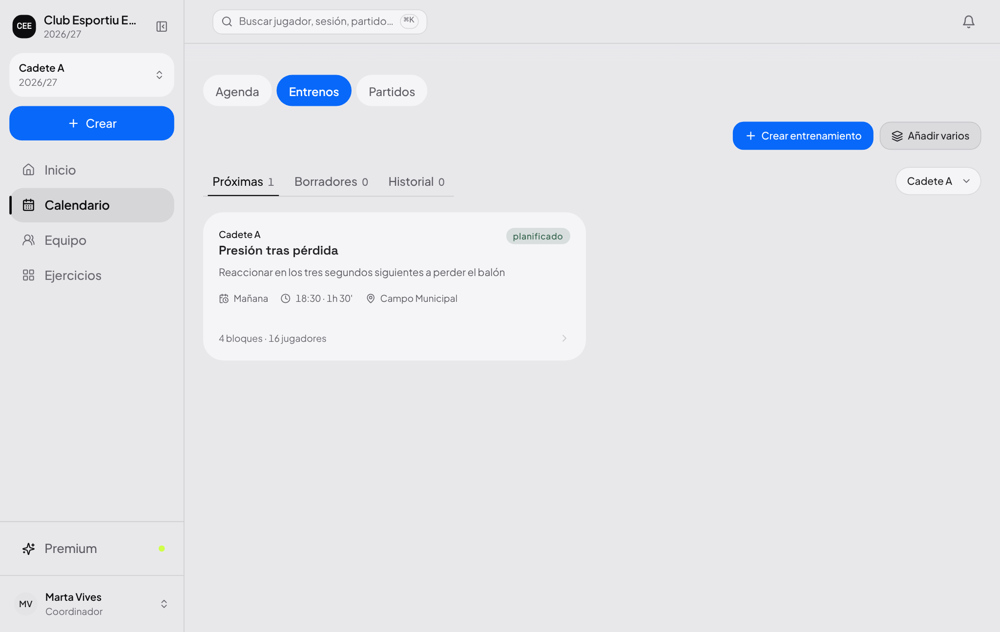
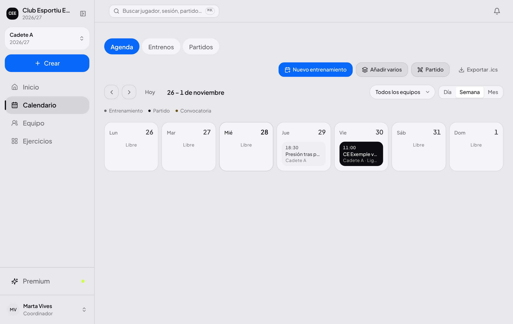
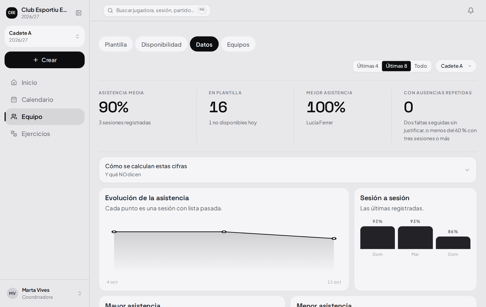
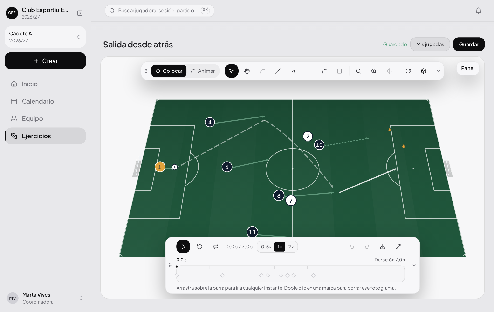
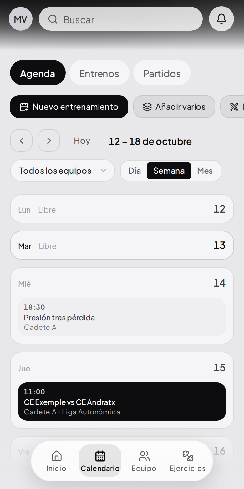
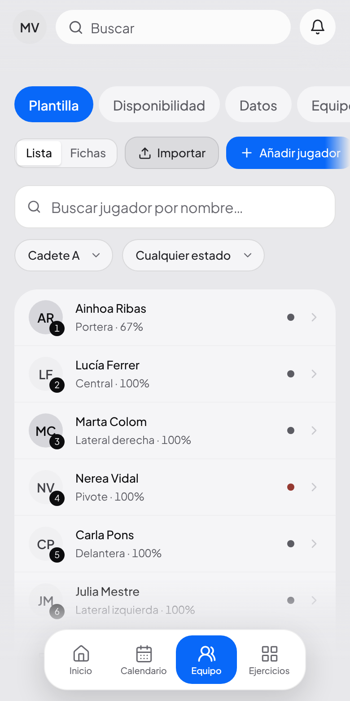
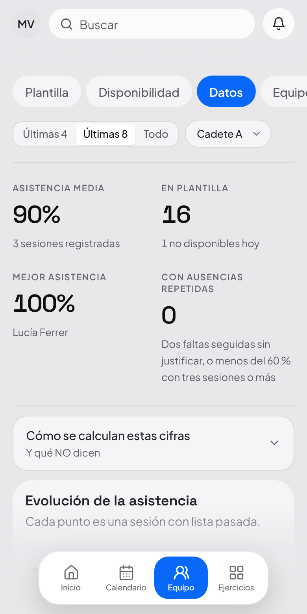

Qué es
Un sitio para la plantilla, la semana de entrenamientos, la convocatoria del sábado y la jugada que quieres que salga. Lo mismo para un equipo que para todo un club.
Se abre en el navegador, en el móvil igual que en el ordenador. No hay nada que instalar ni que actualizar.
El problema
La plantilla en una hoja de cálculo. La asistencia en una libreta. La convocatoria en un grupo de mensajería. Las jugadas en fotos del móvil. Y lo que pasó en marzo, en la memoria de alguien.
Nada se cruza con nada.
Saber quién faltó a los tres últimos entrenamientos antes de hacer la convocatoria es un trabajo manual.
Y cuando alguien se va, se va con la información.
El historial del equipo no puede vivir en el teléfono de una persona.
La plataforma
01
Cada jugadora con su dorsal, su posición, su contacto y su estado.
02
Se pasa lista en el campo, desde el móvil, en menos de un minuto.
03
Quién está, quién no y por qué. Lo que anota el cuerpo técnico.
04
La sesión por bloques, con su duración y sus ejercicios.
05
Lo que funciona, guardado, con material y número de jugadoras.
06
El rival, la hora, quién va y quién se queda.
07
La semana entera: entrenamientos y partidos en el mismo sitio.
08
Las jugadas, con movimiento y con tiempo. Se exportan en vídeo.
09
Asistencia, minutos y resultados a partir de lo que ya se apuntó.
10
Varias personas en el mismo equipo, cada una con su cuenta.
Menos el acceso para varios entrenadores, que es de Max.
Toda la interfaz, de principio a fin.
Plantilla
Dorsal, posición, fecha de nacimiento, contacto y estado. Se ve de un vistazo quién está disponible y quién no, sin abrir una ficha por jugadora.
Se filtra por posición y por estado.
La asistencia de cada una, al lado de su nombre.


Entrenamientos
Calentamiento, parte principal, vuelta a la calma. Cada bloque con su duración y sus ejercicios, sacados de la biblioteca.
Se pasa lista desde la propia sesión.
Lo que funcionó se guarda y se repite.
Calendario
Entrenamientos y partidos en el mismo sitio. Al crear el equipo se dice a qué hora se entrena y el calendario se llena solo, tres meses por delante.
Lo de hoy, siempre lo primero.
Y en el móvil, en el campo, igual.


Partidos y analíticas
No hay que rellenar nada aparte: la asistencia, los minutos y los resultados salen de lo que se apuntó en su momento.
Un dato que falta se queda en blanco.
No se convierte en un cero, que es la forma más fácil de que una gráfica mienta.
Pizarra táctica
No es un dibujo con flechas: las fichas se mueven en el tiempo. Se le da al play y la jugada ocurre, con la duración que tiene de verdad.
El balón va pegado a quien lo conduce.
Cada jugadora sale cuando le toca, no todas en el segundo cero.
Que es lo que hace falta para montar un circuito: una llega al cono y entonces sale la siguiente.
Se exporta en vídeo, tal y como se reproduce.

Para clubes
01
Lo tuyo no lo ve nadie de fuera. Y dentro, cada entrenador ve los equipos que le tocan.
02
Cadete, juvenil, femenino. Cambias de equipo desde arriba y sigues donde estabas.
03
Un enlace a un correo, con fecha de caducidad. Sin contraseñas compartidas por el grupo.
04
Se abre en el navegador. No hay nada que instalar ni que actualizar.
La separación entre clubes no depende de que la aplicación se porte bien: la impone la base de datos, en cada consulta, para cualquiera que entre.



Los límites
Descubrir un límite después de haber metido la plantilla entera es lo que hace perder la confianza. Así que va aquí, en medio, y no en la letra pequeña.
Preparas la convocatoria y la copias donde ya habléis.
Guarda lo que anota el cuerpo técnico. El criterio médico es del club.
La pizarra es para dibujar jugadas, no para leer un partido grabado.
No. Cada club está separado del resto, y la separación no depende de que la aplicación se porte bien: la impone la base de datos. Dentro del club, cada persona ve sólo los equipos que tiene asignados.
No. Se abre en el navegador, en el móvil igual que en el ordenador, y no hay nada que actualizar.
No se borra nada. Conservas los equipos y los datos; sólo dejas de crear equipos nuevos por encima del límite del plan.
Precios
Gratis
Para empezar con un equipo y ver si esto te sirve.
0 €
Para siempre, sin tarjeta
Un equipo
Incluye
ProRecomendado
Para quien lleva dos categorías a la vez.
9 € /mes
o 90 € al año — ahorras 18 €
Hasta 2 equipos
Todo lo de Gratis, con
7 días de prueba antes del primer cobro
Max
Para el club pequeño con varias personas en el cuerpo técnico.
29 € /mes
o 290 € al año — ahorras 58 €
Hasta 5 equipos
Todo lo de Pro, y
7 días de prueba antes del primer cobro
Club
Para el club entero, con todas sus categorías dentro.
59 € /mes
o 590 € al año — ahorras 118 €
Hasta 12 equipos
Todo lo de Max, con
7 días de prueba antes del primer cobro
Si se deja de pagar no se borra nada: se conservan los equipos y los datos, y sólo se deja de crear equipos nuevos por encima del límite del plan.
Por dentro
Los datos
En una ficha hay un nombre, una fecha de nacimiento y un teléfono de contacto. No es una lista de clientes: es una lista de niñas y niños.
Cada club, aislado por la base de datos.
La regla se aplica en cada consulta y no se puede saltar desde el navegador.
Dentro del club, cada quien ve sus equipos.
Se entra por invitación, con caducidad.
Nada de una contraseña compartida en el grupo del club.
El código de la aplicación no guarda el PIN en claro.
Ni un solo dato de tarjeta pasa por nuestros servidores.
El cobro entero lo lleva Stripe; aquí sólo se sabe qué plan está activo.
Hoy
Funcionando, en producción
Todavía no, y por eso no se cobra
Nada de la columna de la derecha aparece anunciado en la página de precios ni dentro de la aplicación. Se añadirá a su plan cuando esté hecho, sin cobrarlo por adelantado.
PlayOff360
El trabajo que no se ve desde la grada: la semana, la plantilla, la jugada y lo que pasó en marzo.
playoff360.site